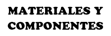
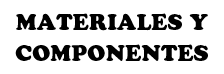
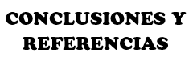
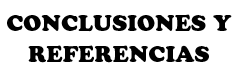

|
Proyectos de Desarrollo TecnológicoDesarrollar e implementar guías de prácticas STEMAutor: Paolo Fabrizio Rodríguez CárdenasJefe de Prácticas: Efrain Mayhua |
 


 

Conclusiones y Referencias |
|
CONCLUSIONES•Tinkercad nos permite poder desarrollar modelos en 3D para crear estructuras de soporte para los sensores a utilizar, a su vez presenta una interfaz de trabajo simple y muy atractiva inicialmente, y con unas pocas horas de entrenamiento podemos adquirir mucha destreza en su uso. •ESP32 la cual es la placa de desarrollo que se usará presenta 30 pines de los cuales, algunos son para tierra (2), para alimentación de 3.3V (1) y algunos funcionan como entradas analógicas (15), como entradas digitales (22) y como salidas digitales (20). A su vez trabaja con tecnología Wifi y alcanza velocidades hasta 150 Mbps trabajando con el protocolo 802.11n, y tiene un rango de alcance de hasta 250 metros lo que nos permite hacer proyectos a gran escala, y finalmente que gracias a su frecuencia de reloj de la placa de desarrollo permite ejecutar las instrucciones con gran rapidez por encima de las demás placas siendo muy superior. •Se utiliza para la programación Arduino IDE, el cual presenta un lenguaje llamado Wiring, siendo un framework escrito en los lenguajes de programación C y C++, y la que nos permitirá monitorear y poder controlar mediante los diversos sensores el control del gusano robótico según las instrucciones que nosotros le mandemos en el programa. •Finalmente, HTML no es un lenguaje de programación; es un lenguaje de marcado que define la estructura de tu contenido. HTML consiste en una serie de elementos que usarás para encerrar diferentes partes del contenido para que se vean o comporten de una determinada manera. Las etiquetas de encierre pueden hacer de una palabra o una imagen un hipervínculo a otro sitio, se pueden cambiar palabras a cursiva, agrandar o achicar la letra, etc, donde se lo realizo mediante block de notas toda la interfaz de la página web visualizado primero en el escritorio y luego se utilizó la aplicación cuteftp que utiliza protocolo FTP para subirlo a la misma internet y sea visible por todo el mundo. REFERENCIASSENSOR ULTRASÓNICOSENSOR INFRARROJOSERVOMOTORWIDGETS TWITTERLink de página de widgetsLISTA DE COLORES PARA INTERFAZ HTMLLink de información de colores para html |
Tweets by UCSP |
| Google - Inicio |